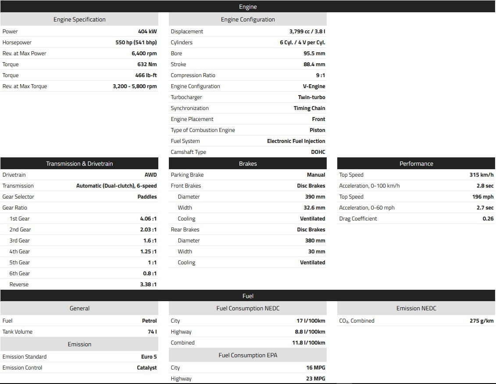

Nissan GT-R (R35)
The Nissan GT-R (R35) is a modern powerhouse known for its outstanding performance and state-of-the-art technology. Since its debut in 2007, this car has redefined expectations, blending sports car agility with grand tourer comfort. Departing from its Skyline lineage, the GT-R boasts a front-mid mounted engine powering all four wheels. Built on the PM platform, it inherits DNA from the Skyline and Nissan Z models. Developed under the Nissan Revival Plan, it debuted at the 2007 Tokyo Motor Show. Featuring cutting-edge aerodynamics, the VR38DETT engine, active suspension, and ATTESA E-TS Pro all-wheel drive, it sets records for acceleration while remaining relatively affordable. However, sales are restricted in some regions due to regulatory constraints.
